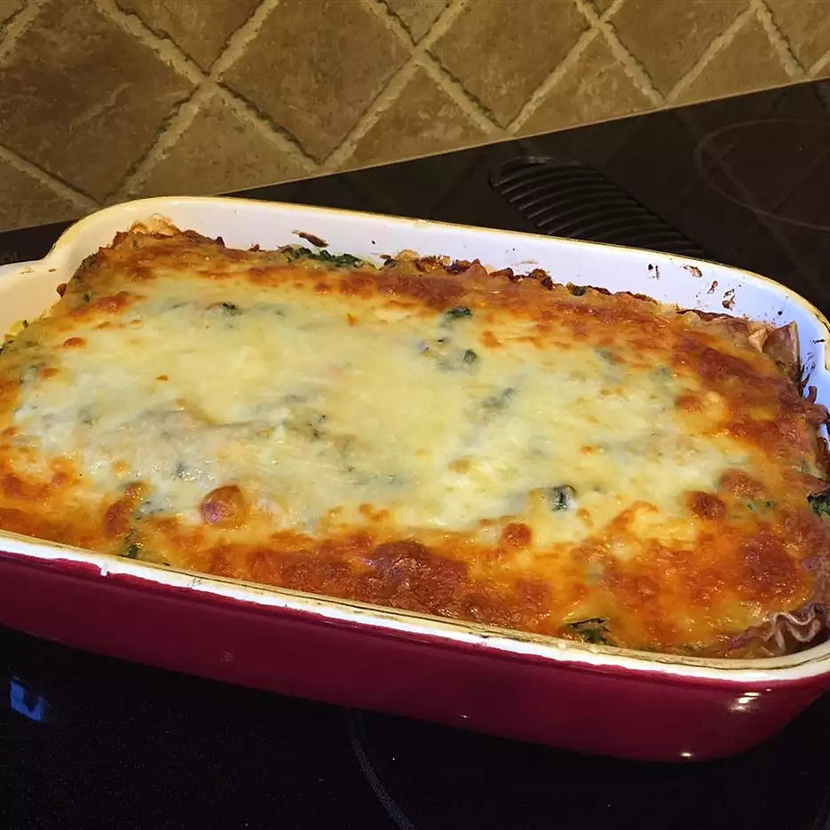

Lasanga

Description
Make this recipe ahead of time and store in refrigerator. Also, freezes well for a healthy instant dinner on a busy night!
Per Serving: 291 calories; protein 13.6g; carbohydrates 30.4g; fat 13.2g; cholesterol 39.1mg; sodium 481.9mg. Full Nutrition
Ingredients
- lasagna noodles
- margarine
- flour
- egg
- egg white
Steps
- Bring a large pot of lightly salted water to a boil. Cook lasagna in the boiling water, stirring occasionally until cooked through but firm to the bite, about 8 minutes. Drain.
- Preheat oven to 375 degrees F (190 degrees C).
- Melt margarine in a skillet over low heat; cook and stir flour, salt, and pepper into the melted margarine until smooth and bubbling, 2 to 3 minutes. Add milk and broth into flour mixture, stirring constantly; bring sauce to a boil. Stir wine
into sauce and remove from heat. Stir Parmesan cheese into sauce until smooth.
- Whisk ricotta cheese, egg, and egg white together in a bowl.